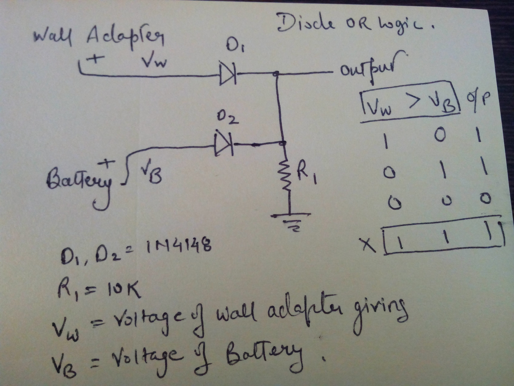

Power switching circuit is shown in figure...

About this circuit...
#One source is coming from Wall adapter.
#Second power source is battery.
So case here is we want battery as backup!!!
So basically we have used Diode OR logic to switch the power supply when the wall power source is cut off.
when wall power source is ON at that time voltage of battery is lower than that of wall power source(condition self acquire). So D1 will protect / cutoff battery to come into circuit and D2 will not allow the current to run into battery but allow to run towards system via Output line as show in pic.
Now if wall power cutt off then at that point battery voltage will be the only source and immediately battery will power the system and D1 will be a blocker and thus current will flow to output line.
So this way we can switch power supply between wall power source and battery.
Note*:voltage of wall power will be less than voltage of battery! otherwise battery will the primary source .